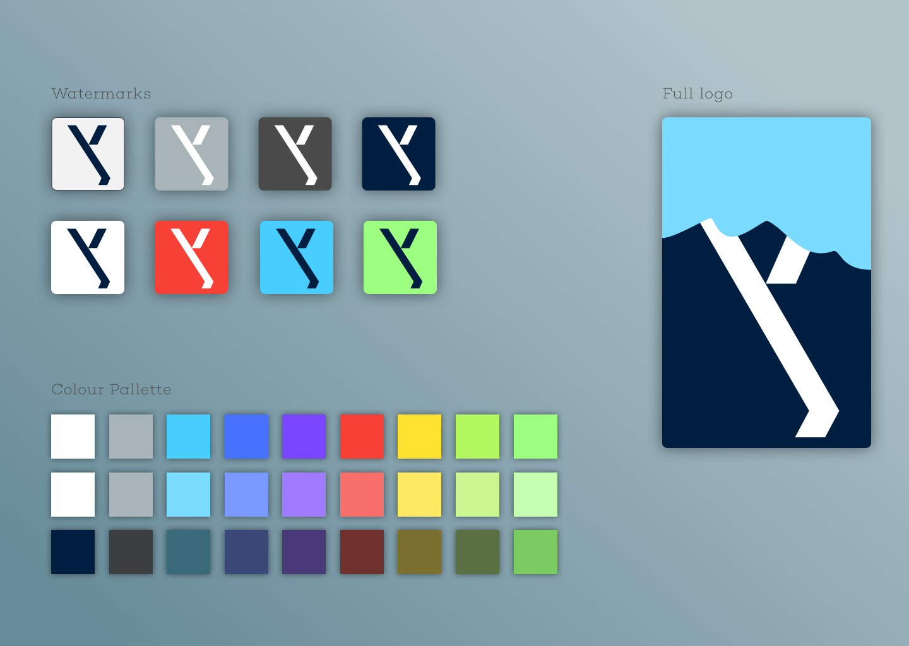
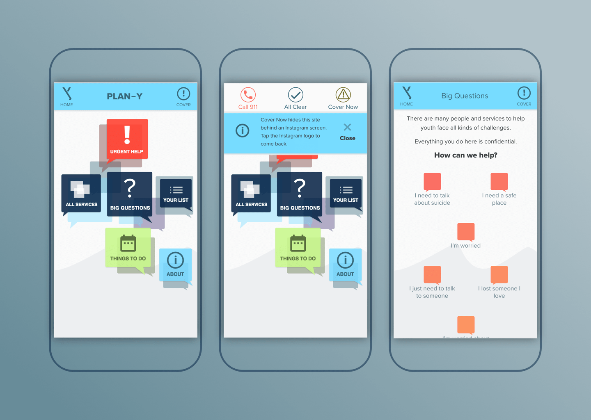
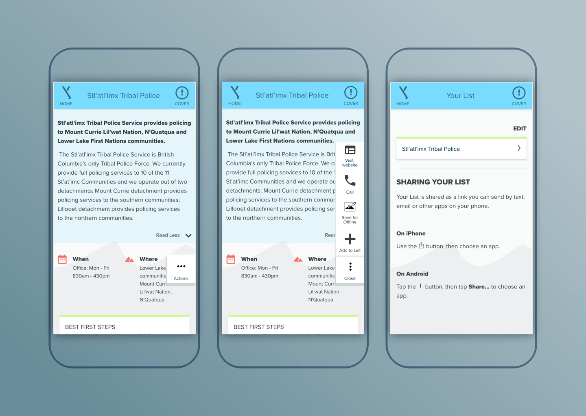
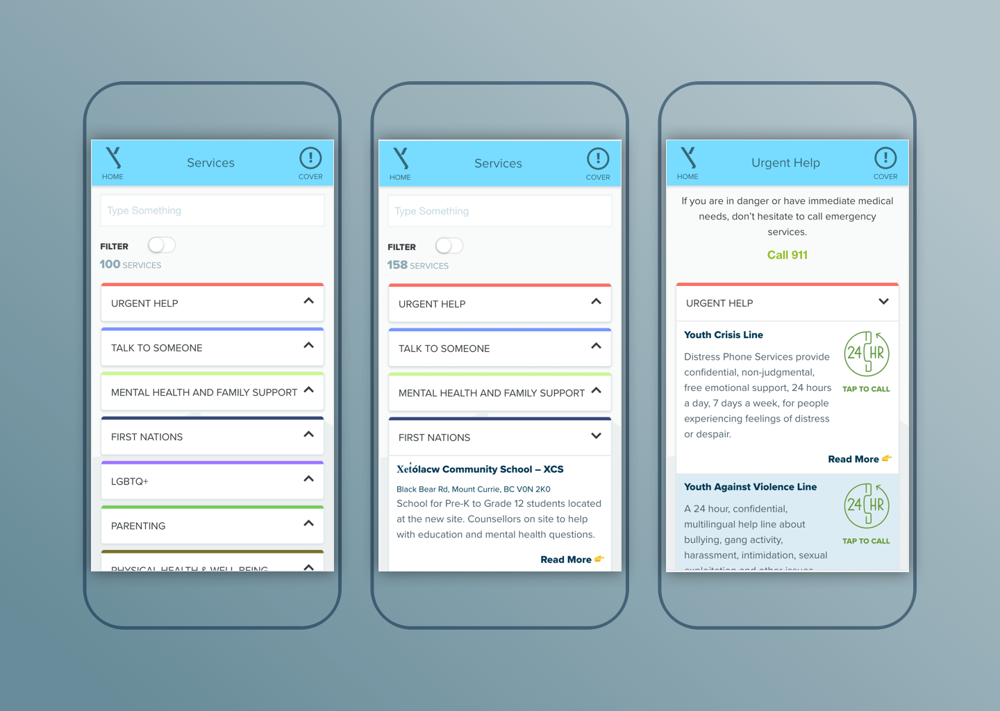

PLAN-Y.ca (Pemberton, Lil’Wat Nation & Lower Lakes, Area C, N’Quatqua, for Youth) is an arm of the Pemberton Valley Local Action Team (LAT). In conjunction with the Child and Youth Mental Health and Substance Use (CYMHSU) Collaborative, they had a goal to improve youth access to mental health services.
In 2016, the Pemberton Valley LAT approached Denim & Steel to design and develop a youth services directory web app for the region. Privacy in a small tight-knit community, spotty internet access, and a diverse demographic presented interesting challanges to work with. As the primary developer, web and visal designer I helped deliver an inclusive and comprehensive solution.
Visit the site.
   